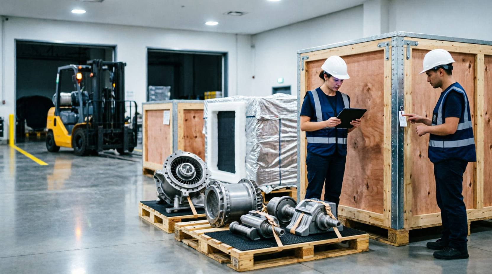

ChenBridge helps international companies navigate China's manufacturing ecosystem through supplier development, sourcing support, and local operational coordination.
Discuss Your RequirementsWe focus on industries where successful China operations require supplier understanding, technical communication, and reliable local execution.
Supporting industrial companies with supplier sourcing, manufacturing coordination, and China-based execution support.
Explore Industry →Supporting technology companies with sourcing, supplier coordination, and manufacturing execution for complex equipment.
Explore Industry →
Supporting specialized logistics products and industrial packaging projects through China supply chain coordination.
Explore Industry →Supporting consumer brands with supplier identification, OEM coordination, and China manufacturing support.
Explore Industry →Understanding supplier capabilities, manufacturing strengths, and production environments helps identify suitable partners.
Industrial projects require clear communication between customer expectations and manufacturing execution.
China operations require continuous communication, follow-up, and coordination throughout the project lifecycle.
Understand product requirements, business goals, and project expectations.
Identify suitable suppliers and assess manufacturing capabilities.
Support communication and execution between global companies and China partners.
Provide ongoing follow-up throughout sourcing and manufacturing processes.
Whether you are sourcing suppliers, developing products, or improving China operations, ChenBridge provides practical support based on local knowledge and execution experience.
Contact ChenBridge